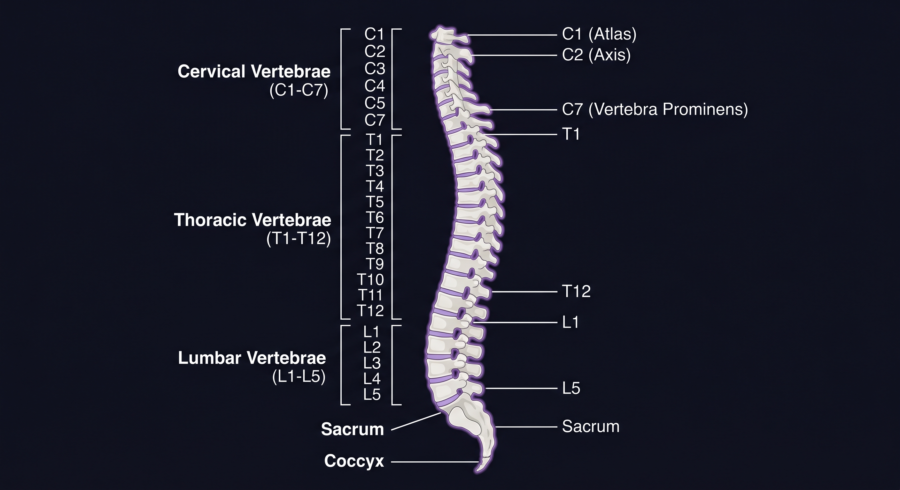
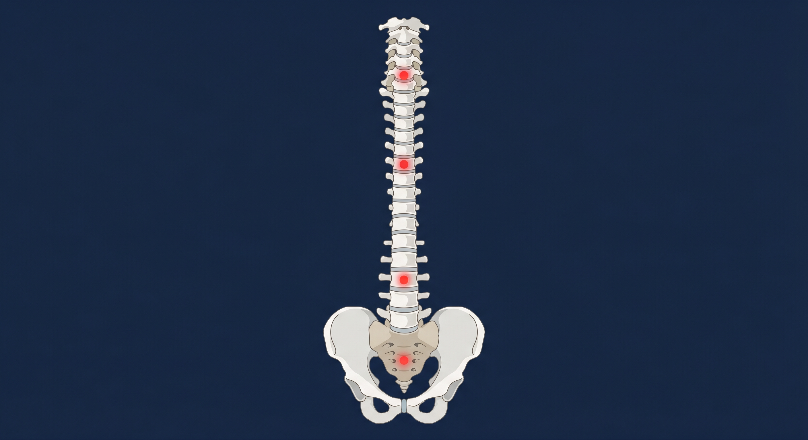

Corregimos desviaciones en tus vértebras para liberar los nervios comprimidos de tu médula espinal. Aliviamos dolores crónicos de espalda, cuello y ciática sin cirugía, en nuestras clínicas modernas de San Salvador y Apopa.

Ofrecemos soluciones clínicas no invasivas y basadas en evidencia científica para corregir desviaciones biomecánicas, aliviar dolores crónicos y devolverte la calidad de vida que mereces.
Alineación manual de alta precisión para corregir desviaciones articulares, liberar los nervios comprimidos y restaurar la biomecánica corporal natural.
Saber MásDescompresión física vertebral diseñada para aliviar hernias discales, estenosis y dolor lumbar crónico, restableciendo la flexibilidad natural.
Saber MásManipulación neuromuscular profunda para eliminar tensiones crónicas, contracturas musculares y restaurar la circulación en los tejidos afectados.
Saber MásEjercicios biomecánicos terapéuticos para corregir desbalances en la postura del cuerpo generados por hábitos sedentarios y uso de pantallas.
Saber MásTratamientos no invasivos personalizados para el control y alivio de lumbalgias persistentes, ciática severa y cervicalgias recurrentes.
Saber MásAlineación articular y muscular optimizada para atletas de alto rendimiento, previniendo lesiones y mejorando la recuperación muscular.
Saber MásDe recomendación positiva basada en pacientes recuperados de dolor lumbar crónico y cervicalgias severas.
Evaluación por resonancia electromagnética para detectar inflamación de órganos y arterias antes de que aparezca el dolor físico.
De respuesta biológica aproximada tras la primera sesión de infiltración articular homeopática o ajuste de columna.
La mala conducción eléctrica de los nervios vertebrales irritados provoca inflamación en otros órganos y articulaciones. Toca los puntos críticos de la columna vertebral para conocer el tratamiento específico o selecciónalo en la cuadrícula lateral.

No se trata de remedios empíricos o supersticiones. En Quiroprácticos Portillo aplicamos manipulación articular científica fundamentada con estudios profesionales, equipos avanzados de biofrecuencias y personal de enfermería cualificado en instalaciones impecables y modernas.
Manipulación y descompresión física de las vértebras desviadas para suprimir la irritación de las ramificaciones nerviosas y frenar la inflamación.
Aplicación localizada de acupuntura combinada con medicamentos homeopáticos específicos. Resultados espontáneos y desinflamación en articulaciones como rodillas.
Tecnología de resonancia biológica que identifica inflamaciones crónicas en arterias, venas y órganos internos por frecuencias antes de volverse clínicas.
Especialista en Biomecánica y Quiropraxia Clínica
Con más de 15 años de experiencia clínica, el Dr. Portillo se ha especializado en el tratamiento no invasivo de patologías de la columna vertebral. Graduado de la Universidad de El Salvador, su enfoque combina la precisión de la medicina científica con el alivio rápido de la homeocinetría.
Clínicas modernas equipadas, con enfermeras cualificadas y asistentes profesionales para garantizar una consulta segura. Sin iframes pesados que ralentizan tu conexión móvil.
El 100% de nuestros pacientes atendidos bajo nuestro método de ajuste físico y nutrición biológica reporta un alivio notable de sus síntomas.
Completa nuestro formulario de síntomas. Nuestro equipo clínico validará tu información y te contactará de inmediato por WhatsApp para formalizar tu cita en la sede de tu preferencia.
+503 2216-1866
Escribe tus síntomas para orientar tu diagnóstico antes de tu llegada a la clínica.